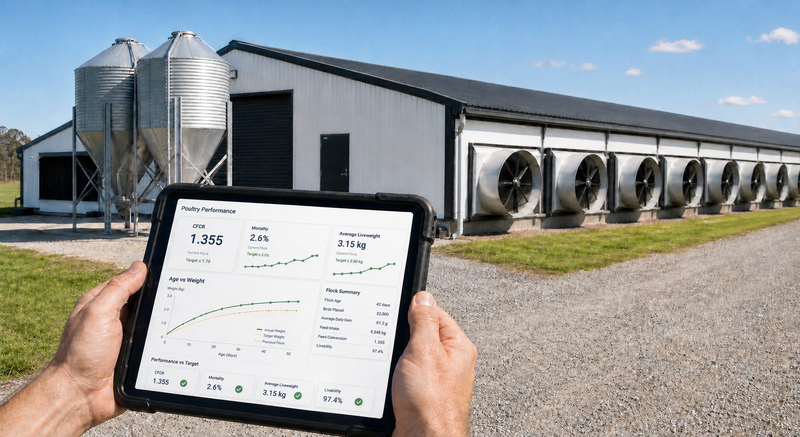
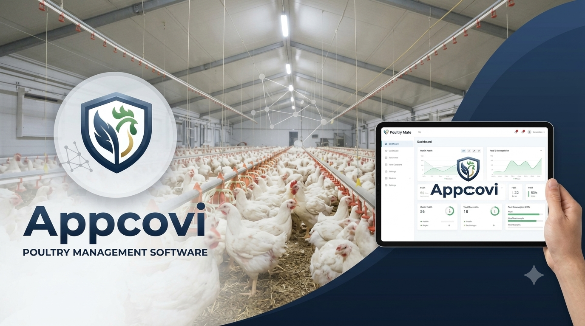

📊
Poultry Farm Results
Turn shed-level batch data into clear, useful farm results and performance insight.
Explore results →Appcovi brings the tools poultry teams need into one clear, connected suite — from daily shed results to compliance, training and intelligent farm support.

Purpose-built software for the work that happens every day across poultry farms, sheds and teams.
Not generic business software dressed up for agriculture. Appcovi is shaped around poultry workflows, farm teams and the results that matter.
Give your team a clearer view of what is happening — and what needs attention next.
Start with Broiler Base Mate, then discover the full suite.